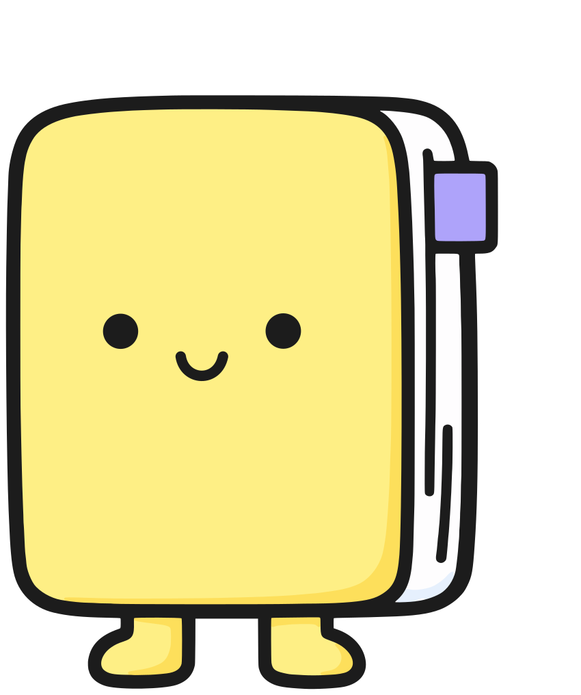

내 방식으로 꾸미는 기록
사진에 내 손글씨와 스티커를 더해요. 어떤 순간을 어떻게 남길지는 나의 취향으로 정해요.
브랜드 소개
서비스 이름과 캐릭터, 화면에 사용하는 색상을 소개해요.
DIO
오늘의 순간을 나답게 기록하다
사진에 내 손글씨와 스티커를 더해요. 어떤 순간을 어떻게 남길지는 나의 취향으로 정해요.
친구를 초대해 같은 다이어리를 채워요. 내 기록에 다른 사람의 시선이 더해지면 또 다른 이야기가 돼요.
MEET OUR MASCOTS
DIO와 함께하는 두 마스코트를 하나씩 만나보세요.

눈사람 캐릭터
보라색 목도리를 두른 디오예요.
하얀 몸과 보라색 목도리가 특징인 눈사람 마스코트예요. 모아와 함께 DIO의 브랜드 캐릭터로 등장해요.
THE COLORS WE KEEP
사진과 필기 내용을 우선해 보여주고, 조작에 필요한 영역에 보라색을 사용해요.
사진과 손글씨를 감싸는 바탕
다음 행동을 알려주는 색
모아와 꾸미는 재미를 담은 포인트